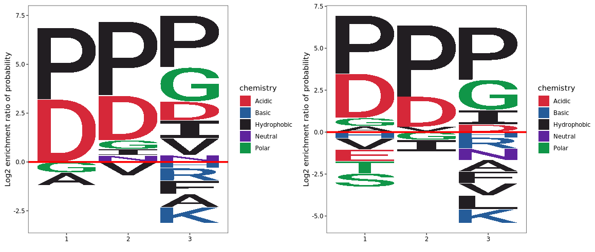
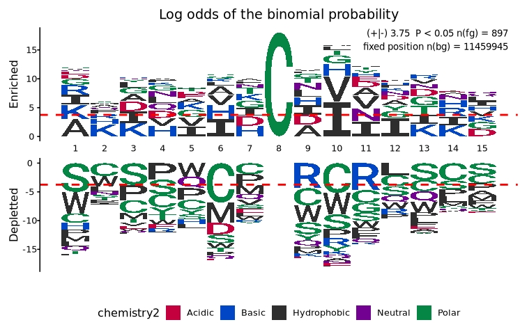

# Calculate fold changes
pdf$ratio1 <- pdf$`sgeIF5A-rep1` / pdf$`wt-rep1`
pdf$ratio2 <- pdf$`sgeIF5A-rep2` / pdf$`wt-rep2`
# Select top 29 enriched motifs for each replicate
enrich1 <- subset(pdf, ratio1 >= 1.5) %>%
dplyr::slice_max(order_by = ratio1, n = 29)
enrich1.bg <- subset(pdf, ratio1 < 1.5)
enrich2 <- subset(pdf, ratio2 >= 1.5) %>%
dplyr::slice_max(order_by = ratio2, n = 29)
enrich2.bg <- subset(pdf, ratio2 < 1.5)Peptide motif plot
Intro
This section focuses on visualizing peptide motifs derived from ribosome profiling (Ribo-seq) analyses. During translation, the ribosome orchestrates protein synthesis by cycling through three key active sites: the E (exit), P (peptidyl), and A (aminoacyl) sites. Each of these sites plays a critical role in decoding mRNA and elongating the nascent peptide chain. The A site is responsible for decoding the mRNA codon by matching it with the correct aminoacyl-tRNA; the P site holds the growing peptide chain and participates in peptide bond formation; and the E site facilitates the exit of deacylated tRNA.
The time a ribosome spends decoding a codon—often referred to as dwell time—can vary depending on the sequence context around these EPA sites. This variability can lead to ribosome stalling, particularly when rare codons, nascent peptide-induced structural constraints, or regulatory elements interfere with efficient translation. For instance, negatively charged or bulky amino acids at the A site may delay tRNA accommodation and peptide bond formation, thereby increasing the decoding time. Similarly, specific dipeptide or tripeptide motifs spanning the P and A sites can hinder peptide elongation due to steric or electrostatic interactions.
Ribosome profiling (Ribo-seq) enables high-resolution mapping of ribosome positions on mRNAs, providing a powerful tool to quantify dwell times at codon-level resolution. By mapping footprint reads centered at specific positions (e.g., aligning the A site), researchers can aggregate sequence motifs that correspond to prolonged ribosome occupancy, revealing patterns of enrichment or depletion in amino acid usage.
To visualize such motifs, statistical tools like pLogo can be employed. Unlike traditional sequence logos that scale residues by frequency, pLogo represents amino acid enrichment or depletion as a function of statistical significance against a defined background. This enables a more rigorous interpretation of sequence features that tend to promote or hinder translation at the ribosome’s active sites. Moreover, pLogo allows for motif conditioning by fixing residues at specific positions (e.g., a conserved P-site proline), thus uncovering context-dependent translation dynamics.
kpLogo is an another powerful computational tool designed to visualize position-specific k-mer enrichment patterns in biological sequences such as DNA, RNA, or protein sequences. It builds upon the concept of traditional sequence logos by enabling the detection and display of statistically significant k-mers — not just single residues — at individual motif positions.
Unlike conventional logo tools that scale individual residue heights based on frequency or information content, kpLogo tests all possible k-length substrings (k-mers) at each sequence position and ranks them according to p-values derived from appropriate statistical tests (e.g., binomial, rank-sum, etc.). This results in highly informative visualizations that reveal both overrepresented and underrepresented k-mers across sequence positions.
In summary, decoding time at the EPA sites is a nuanced reflection of codon usage, tRNA availability, peptide chemistry, and regulatory sequence elements. Motif visualization strategies such as pLogo help unravel the sequence determinants influencing ribosome kinetics in a biologically meaningful and statistically interpretable way.
Extract Overrepresented motifs
Previously, we observed that in the absence of eIF5A, many tripeptide motifs showed increased abundance. Visualizing these motifs as sequence logos can help us identify which amino acids tend to be enriched at the ribosomal E, P, and A sites, potentially reflecting altered decoding or elongation dynamics.
We used the logo_plot() function to visualize enriched tripeptide motifs. Based on the article’s methodology, we selected the top 29 upregulated motifs (based on fold change) in each replicate as the foreground sequences. Motifs with less than 1.5-fold change were used as the background set:
Motif logo visualization
Default plot:
logo_plot(foreground_seqs = enrich1$pep_seq,
method = "bits") +
logo_plot(foreground_seqs = enrich2$pep_seq,
method = "bits")Set method = "prob":
logo_plot(foreground_seqs = enrich1$pep_seq,
method = "prob")+
logo_plot(foreground_seqs = enrich2$pep_seq,
method = "prob")We further used the EDLogo method from the logolas R package to visualize motif enrichment:
logo_plot(foreground_seqs = enrich1$pep_seq,
method = "EDLogo")
logo_plot(foreground_seqs = enrich2$pep_seq,
method = "EDLogo")Visualize frequency enrichment by incorporating background sequences. Residue height represents the log₂ enrichment ratio of the amino acid frequency at a given position in the foreground relative to the background.
To visualize frequency enrichment using background sequences, each amino acid at a given position is evaluated for its level of enrichment or depletion in the foreground set compared to the background.
The height of each amino acid character represents the log₂ enrichment ratio between its frequency in the foreground and background sequences:
\[ \text{Enrichment ratio for residue } X_i = \log_2 \left( \frac{f_{\text{foreground}}(X_i)}{f_{\text{background}}(X_i)} \right) \tag{1} \]
- X refers to a specific amino acid (from the 20 standard amino acids).
- i indicates a specific position in the aligned sequence.
If the ratio is greater than 1 (log₂ > 0), the residue is statistically overrepresented and appears taller above the x-axis.
If the ratio is less than 1 (log₂ < 0), the residue is underrepresented and appears below the x-axis.
logo_plot(foreground_seqs = enrich1$pep_seq,
background_seqs = enrich1.bg$pep_seq,
method = "enrich") +
logo_plot(foreground_seqs = enrich2$pep_seq,
background_seqs = enrich2.bg$pep_seq,
method = "enrich")
If background sequences are not available, you can generate them by using the generate_kmers function to extract all possible amino acid k-mers of a specified length from the entire proteome. Here we load CDS fasta file and translate it into amino acid:
# generate kmers
kmer <- generate_kmers(fa_file = "sac_cds.fa",
fa_type = "dna",
kmer_length = 3,
translate = T)
# plot
logo_plot(foreground_seqs = enrich1$pep_seq,
background_seqs = kmer,
method = "enrich") +
logo_plot(foreground_seqs = enrich2$pep_seq,
background_seqs = kmer,
method = "enrich")Statistical significance visualization
Probability logo is first proposed and implemented in pLogo for unweighted sequences, especially protein sequences. In probability logos, residues are scaled relative to the statistical significance (-log10(P value)) of each residue at each position. Enriched residues stack on the top, whereas depleted residues stack on the bottom. Significant positions have coordinates colored in red.
The official pLogo tool is only available online and imposes size limitations on uploaded background sequences. To address this limitation and enable greater flexibility, we implemented an R-based version of the pLogo algorithm based on its original principles.
Our custom function, plogo_plot, allows users to perform motif enrichment analysis using their own foreground and background sequences and to generate corresponding motif visualizations.
The figure below is adapted from Figure 1 of the pLogo publication and illustrates specific sequence motifs from human and mouse data. To reproduce this figure, we downloaded the sequence datasets provided in the article’s supplementary materials and reanalyzed them using our own implementation.
Get background k-mers
To build background sequence datasets, we first downloaded the complete human and mouse proteomes from the Ensembl database. Using the custom R function generate_kmers, we generated all possible 15-mer peptide subsequences using a 1-residue sliding window.
We select the longest amino acid sequence for analysis to reduce computation time:
# Download human and mouse protein sequences from Ensembl
# wget https://ftp.ensembl.org/pub/release-113/fasta/homo_sapiens/pep/Homo_sapiens.GRCh38.pep.all.fa.gz
# wget https://ftp.ensembl.org/pub/release-113/fasta/mus_musculus/pep/Mus_musculus.GRCm39.pep.all.fa.gz
# select longest cds for analysis
pep.list <- lapply(c("Homo_sapiens.GRCh38.pep.all.fa.gz",
"Mus_musculus.GRCm39.pep.all.fa.gz"),
function(x){
hm.pep <- Biostrings::readAAStringSet(x)
names(hm.pep) <- sapply(strsplit(names(hm.pep),split = " "),"[",4)
leninfo <- data.frame(id = names(hm.pep),
len = Biostrings::width(hm.pep)) %>%
dplyr::slice_max(order_by = len,n = 1,by = id)
hm.pep <- hm.pep[leninfo$id]
})Generate background sequences encompassing the complete set of k-mer combinations:
# Generate human background 15-mers
hm.kmers <- generate_kmers(fa_obj = pep.list[[1]],
fa_type = "aa",
kmer_length = 15)
# check
head(hm.kmers)
# [1] "XTDKLIFGKGTRVTV" "TDKLIFGKGTRVTVE" "XIQGAQKLVFGQGTR" "IQGAQKLVFGQGTRL" "QGAQKLVFGQGTRLT"
# [6] "GAQKLVFGQGTRLTI"
# Generate mouse background 15-mers
mm.kmers <- generate_kmers(fa_obj = pep.list[[2]],
fa_type = "aa",
kmer_length = 15)
# check
head(mm.kmers)
# [1] "MRCLAEFLRLLVLWI" "RCLAEFLRLLVLWIP" "CLAEFLRLLVLWIPA" "LAEFLRLLVLWIPAT" "AEFLRLLVLWIPATG"
# [6] "EFLRLLVLWIPATGD"Enrichment plot
First, we load the motif sequences of interest. With the sequences prepared, we can now perform statistical enrichment analysis and visualization using the plogo_plot function:
To separate enriched and depleted residues into two distinct panels for clearer interpretation:
# Display enriched and depleted residues in separate panels
plogo_plot(foreground_seqs = logo$X312.Human.Src.Phosphorylation.Sites[1:312],
background_seqs = hm.kmers,
type = "sep")To visualize the motif specific to mouse S-nitrosylation sites:
# Visualize enrichment/depletion in mouse S-nitrosylation data
plogo_plot(foreground_seqs = logo$X897.Mouse.S.Nitrosylation.Sites,
background_seqs = mm.kmers,
type = "sep")
Return enrichment matrix
By setting return_data = TRUE in the plogo_plot function, users can extract the underlying log-odds enrichment matrix instead of generating the default plot. This matrix contains log-scaled enrichment or depletion scores for each amino acid at each sequence position, allowing users to perform downstream customized visualizations or statistical analyses:
logo.mat <- plogo_plot(foreground_seqs = logo$X897.Mouse.S.Nitrosylation.Sites,
background_seqs = mm.kmers,
type = "sep",
return_data = T)
# check
head(logo.mat[1:5,1:5])
# [,1] [,2] [,3] [,4] [,5]
# A 3.0019778 0.45066123 1.2935104 0.3054578 0.675915762
# R 1.6779435 0.89863638 -0.1011318 -0.6101936 -0.004278364
# N 0.2781619 -0.57423131 0.2729732 1.0391953 0.040842459
# D 0.6988828 0.05319199 1.7465229 1.3097744 0.573454875
# C -1.6254121 -2.24066000 -2.2491104 -2.2449261 -1.634282743Theoretical Principle of pLogo
pLogo (probability logo) is a motif visualization tool that scales residue characters not by raw frequency but by the statistical significance of their over- or underrepresentation compared to a defined background model, typically using binomial probability.
Statistical Model
For a given residue r at position i in the foreground dataset (e.g., aligned modification sites), pLogo compares its observed count K with its expected frequency p, derived from the background dataset. Assuming N sequences in the foreground, the probability model is:
\[ K \sim \text{Binomial}(N, p) \tag{2} \]
Where:
- K: observed count of residue r at position i in the foreground
- N: total number of foreground sequences
- p: background frequency of residue r at that position
Residue Significance and Height Calculation
The log-odds score for residue r at position i, which determines its vertical height in the pLogo visualization, is calculated as:
\[ \text{Height}(r_i) \propto \log_{10} \left( \frac{\Pr(k \ge K \mid N, p)}{\Pr(k \le K \mid N, p)} \right) \tag{3} \]
This score provides a continuous probability-based metric reflecting both enrichment and depletion. It approximates:
\[ h(r, i) = \begin{cases} +\log_{10} \left( \frac{1}{\Pr(k \ge K \mid N, p)} \right), & K > Np \\ -\log_{10} \left( \frac{1}{\Pr(k \le K \mid N, p)} \right), & K < Np \\ 0, & K \approx Np \end{cases} \tag{4} \]
Here, residues with higher scores are displayed above the x-axis (significantly enriched), while those with negative scores appear below (significantly depleted).
Bonferroni Correction and Significance Threshold
To correct for multiple hypothesis testing across all residue-position pairs, a Bonferroni-adjusted threshold is applied. The number of independent tests is approximately:
\[ m = \sum_{i \in R} C_i \tag{5} \]
Where:
- R: set of non-fixed positions
- C_i: number of unique residues observed at position i in the background
The corrected alpha level is:
\[ \alpha' = \frac{0.05}{m} \tag{6} \]
The threshold for visualizing statistical significance on the pLogo is then:
\[ \text{Threshold} = \pm \log_{10} \left( \frac{\alpha'}{1 - \alpha'} \right) \tag{7} \]
Reference
This approach was introduced in:
O’Shea JP, Chou MF, Quader SA, et al. pLogo: a probabilistic approach to visualizing sequence motifs. Nature Methods (2013), 10(12):1211–1212.